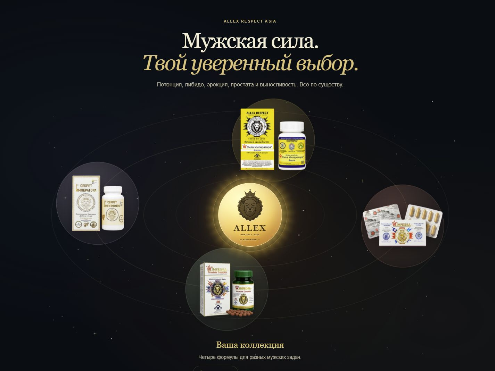

Live business website
ALLEX RESPECT ASIA
I built the company's live site: an animated product collection, four product pages, a comparison table, company information, a document library and mobile navigation. I did the frontend, responsive layouts and deployment. Product artwork and records come from the business.